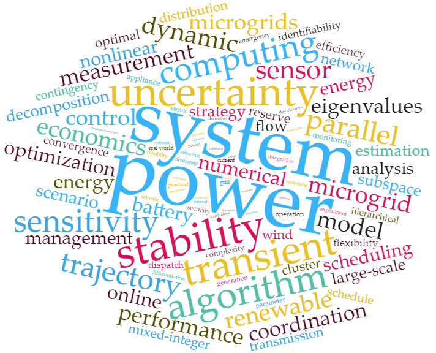

Research
Catelog
- Keywords
- Research Interests
- Research Grants
- Research Experience
Keywords
Research Interests
- Power System Stability and Control
- Transient Stability and Short-term Voltage Stability
- Dynamic and Frequency-dependent Modeling and Equivalence
- HVDC and FACTS
- Power System Operation
- Economic Dispatch and Unit Commitment with Uncertainties
- Medium-Voltage DC (MVDC) Systems and Microgrids
- Renewable Energy Integration
- Power System Measurement
- Novel Sensors and their Applications
- Non-Intrusive Load Monitoring (NILM)
- Power Disturbance Analytics
- High Performance Numerical Analysis and Optimization
- Differential and Algebraic Equations (DAEs)
- Scalable Nonlinear Programming (NLP) Algorithm
- Parallel Computing on Multi-core CPU and GPU based Clusters
Research Grants
- International Postdoctoral Exchange Fellowship, China Postdoctoral Science Foundation, "Smart Grid Self-Awareness based on Power Disturbance Analytics: Theory and Methods", 2015/09 - 2017/08, Grant No. 20150004.
- First-Class Research Grant, China Postdoctoral Science Foundation, "Stochastic and Stability-Aware Optimal Operation for Power Systems: Model and Algorithm", 2015/07 - 2016/06, Grant No. 2015M570506.
- Joint Ph.D. Program, China Scholarship Council, "Stability-Constrained Optimal Power Flow for Large-Scale Power Systems", 2012/08 - 2013/11, Grant No. 201206320026.
- Excellent Doctoral Dissertation Candidate Scholarship, Zhejiang University, "Stability-Constrained Optimal Power Flow for Large-Scale Power Systems: Models, Algorithms and Applications", 2012/04 - 2013/03, Grant No. 201209A.
Research Experience
2015.11 – present, Postdoctoral Fellow
University of Alberta, Edmonton, Canada. Mentor: Dr. Wilsun Xu
• Power disturbance analytics for self-awareness of smart grid
• Advanced algorithm development for sensor array measurement
• Power system modelling and equivalence
2014.7 – 2015.10, Postdoctoral Fellow
Zhejiang University, Hangzhou, China. Mentor: Prof. Youxian Sun
• Applications of SOPF on practical province-level power systems
• Algorithm enhancement for large-scale dynamic optimization algorithms
• Parallel computing on heterogeneous computers with multicore CPUs and GPUs
• Multiple level decomposition and load balancing for massive parallel computing
2012.8 – 2013.11, Joint Ph.D. Scholar
Iowa State University, Ames, United States. Advisor: Dr. Venkataramana Ajjarapu
• Stochastic model for preventive-corrective stability constrained optimal power flow
• Dynamic optimization algorithm development: Direct multiple shooting method
• Reactive power reserves and stability constraints analysis for electricity markets
• Trajectory sensitivity analysis and its applications in power system dynamics
2009.8 – 2014.6, Graduate Research Assistant
Zhejiang University, Hangzhou, China. Advisor: Dr. Quanyuan Jiang
• Transient stability constrained optimal power flow (TSCOPF)
• Innovative NLP algorithm: Reduced-space interior point method (RIPM)
• Parallel computing with multicore CPU based Beowulf cluster
• Setup and maintain a 18 nodes, 200 cores laboratory cluster at ZJU
2009.7 – 2009.8, Graduate Intern
Railway Electrification Design Institute (EDI), Tianjin, China. Mentor: Pengcheng Su
• Power quality evaluation for high-speed railway electric traction system
• Hybrid electrical-magnetic-mechanical simulation for railway electrification system
2009.2 – 2009.6, Undergraduate Thesis Research
Zhejiang University, Hangzhou, China. Advisor: Dr. Quanyuan Jiang
• “Parallel computing based power system optimal power flow (OPF)”
• Investigation on parallel sparse linear solvers for fast solution of OPF
• Rated as “Top 100 Undergraduate Thesis” at Zhejiang University
2007.6 – 2009.6, Undergraduate Research Assistant
Zhejiang University, Hangzhou, China. Advisor: Dr. Quanyuan Jiang
• Automatic differentiation (AD) and its application in power system computation
• HVDC and FACTS modeling and integration in OPF
2008.10 – 2010.6, National Undergraduate Innovative Research Program
Zhejiang University, Hangzhou, China. Advisor: Dr. Quanyuan Jiang
• “Distributed microgrid energy management system based on PC cluster”
• Coordination algorithm for day-ahead and real-time operation of microgrids
2008.7 – 2008.9, Undergraduate Intern
Baishan Hydro Plant, Huadian, China. Mentor: Xiangdong Jiang
• Automatic generation control (AGC) system and unit low-frequency detection
• Industry intranet infrastructure design and deployment
2007.5 – 2008.5, Undergraduate Student Research Training Program (SRTP)
Zhejiang University, Hangzhou, China. Advisor: Dr. Yingying Yao
• “Integrated experimental platform for audio signal processing”
• Rated as “Outstanding” in the final project evaluation